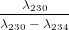
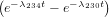

In Section 2.4, we saw that the 235U-207Pb and 238U-206Pb decay series generally reach a state of secular equilibrium, in which the activity (expressed in decay events per unit time) of each intermediate daughter product is the same, so that:
as described by Equation 2.20. However, certain natural processes can disturb this equilibrium situation, such as chemical weathering, precipitation from a solution, (re-)crystallisation etc. The leads to two new types of chronometric systems:
This idea is most frequently applied to the 238U-decay series, notably 230Th and 234U. The first type of disequilibrium dating forms the basis of the 234U-238U and 230Th methods (Sections 9.1 and 9.2). The second forms the basis of the 230Th-238U method (Section 9.3)
The activity ratio of 238U to its third radioactive daughter 234U in the world’s oceans is A(234U)∕A(238U) ≡ γ∘ ≈ 1.15. The slight enrichment of the 234U over 238U is attributed to α-recoil of its immediate parent 234Th and the fact that 234U is more ‘loosely bound’ inside the crystal lattice of the host mineral, because it is preferentially seated in sites which have undergone radiation damage. Once the oceanic U is incorporated into the crystal structure of marine carbonates, the radioactive equilibrium gradually restores itself with time. The total activity of 234U is made up of a component which is supported by secular equilibrium (and equals the activity of 238U) and an ‘excess’ component, which decays with time:
|
| (9.1) |
where A(234U)∘x is the initial amount of excess 234U and λ234 = 2.8234 × 10−6 yr−1 (t1∕2 = 245.5 kyr). Let A(234U)∘ be the initial total 234U activity. Then:
|
| (9.2) |
Dividing by A(238U):
|
| (9.3) |
Which can be solved for t until about 1 Ma.
U and Th are strongly incompatible elements. This causes chemical fractionation and disturbs the secular equilibrium of the 238U decay series in young volcanic rocks. It is commonly found that the activity ratio A(230Th)∕A(238U) > 1. As expected, the secular equilibrium between 234U and 238U is not disturbed by chemical fractionation, so that A(234U)∕A(238U) = 1. The total 230Th activity is given by:
|
| (9.4) |
where A(230Th)∘x is the initial amount of ‘excess’ 230Th at the time of crystallisation and A(238U) = A(234U) due to secular equilibrium of the U isotopes. Thus, the first term of Equation 9.4 increases with time from 0 to A(238U) while the second term decreases from A(230Th)∘x to 0. Dividing by A(232Th) yields a linear relationship between A(230Th)∕A(232Th) and A(238U)∕A(232Th):
|
| (9.5) |
This forms an isochron with slope (1 − e−λ230t), from which the age t can be calculated. This method is applicable to volcanic rocks and pelitic ocean sediments ranging from 3ka to 1Ma.
Uranium is significantly more soluble in water than Th. As a result, the intermediate daughter 230Th is largely absent from sea water. Thus, lacustrine and marine carbonate rocks contain some U but virtually no Th at the time of formation. The 230Th activity increases steadily with time as a result of 234U decay. The total 230Th activity consists of a growing component A(230Th)s that is in secular equilibrium with 238U and a shrinking component A(230Th)x of ‘excess’ 230Th produced by the surplus of 234U commonly found in ocean water (see section 9.1):
| A(230Th) = A(230Th)s + A(230Th)x | (9.6) | |
| with: | A(230Th)s = A(238U)(1 − e−λ230t) | (9.7) |
| and: | A(230Th)x = A(234U) ∘x | (9.8) |
In which the expression for A(230Th)x follows from Equation 2.14 and A(234U)∘x denotes the initial amount of excess 234U activity (as in Section 9.1). Taking into account that A(234U)∘x = A(234U)∘− A(238U), and dividing by A(238U), we obtain:
|
| (9.9) |
in which γ∘≡ A(234U)∕A(238U) as defined in Section 9.1. The formation age of the carbonate can be calculated by substituting Equations 9.7 and 9.9 into 9.6 and solving for t.
|
| (9.10) |
If γ∘ = 1 (i.e., the water is in secular equilibrium for U), then Equation 9.6 simplifies to:
|
| (9.11) |
If γ∘≠0, Equation 9.11 yields ages that are systematically too old, unless t < 100ka and γ∘≤ 1.15.